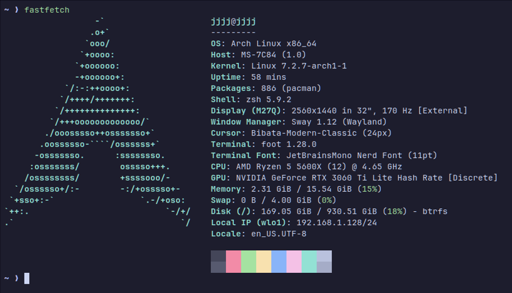
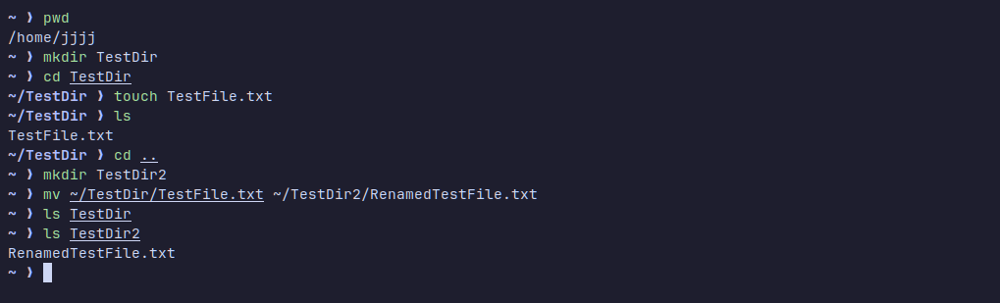
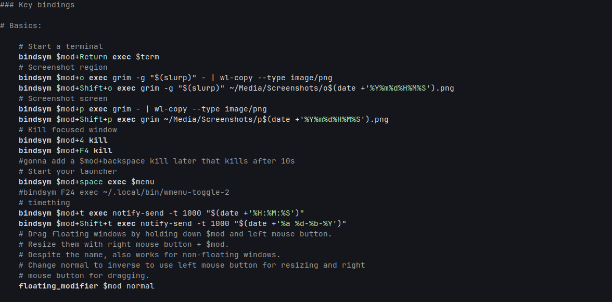

Arch Linux
My Linux system, configuration and administration
Background
About one year ago I installed Arch Linux to use as my main operating system, replacing my Linux Mint installation, which up until that point, was the main operating system I used for a couple years. Overall I have been running some version of Linux for about 3 years.
In this project, I will showcase my current system, how I use it, manage/administrate it, and some of what I learnt during this time.
My System

Distribution: Arch Linux
File System: Btrfs
Init System: systemd
Display Protocol: Wayland
Compositor/Window Manager: Sway
Terminal Emulator: foot
Shell: zsh
Application Launcher: wmenu
Btrfs
I opted to use the copy-on-write filesystem Btrfs, over the more popular and common ext4 because of the many useful additional features it provides over ext4. Some of these features being: subvolumes, transparent compression, checksumming, RAID, and most famously, snapshots/rollbacks.
Filesystems such as ext4, while probably more stable and reliable, lack many of these conveniences, which is why I chose it.
systemd
Arch Linux comes with systemd as its service management and init system. I use commands like systemctl for managing services and other useful commands like journalctl to inspect system log files when things break.
Wayland and Sway
Wayland is the display protocol, while Sway is the compositor/windowmanager actually using that protocol. I chose to use Wayland despite owning an Nvidia GPU (works ok tho) as I wanted access to newer and more modern display technology, and the enhanced security model of Wayland is also a nice bonus.
After you have a chosen display protocol, you also will need a compositor/windowmanager if you want to interact with your desktop with a graphical user interface. While there are many to choose from, I decided to go with sway, as it was relatively stable, tiling, and generally minimal compared to the alternatives.
In my previous Linux Mint installation, I also used a tiling window manager; only difference being I used Xorg (X11 protocol) and dwm (a X11 windowmanager).
foot and zsh
foot (yeah it's called that...), is currently one of the more simple and fast terminal emulators for Wayland. I chose to use it as it was more slim and lightweight relative to the other current Wayland terminal emulators available.
For my shell, I chose zsh, as while not as lightweight as my terminal emulator, its QOL features generally make up for it.
wmenu
wmenu is a ultra light application launcher that allows me to launch programs via text after I press a keybind, similar functionality can be noted for Windows Start (using Win Key) and the actually more comparable, MacOS Spotlight Search. wmenu is a Wayland port of a very famous and minimal program, dmenu.
The Command Line And Administration

When using Linux, there's one thing you will very quickly have to get comfortable with, and that is using the terminal/command line.
It's very common to use it for very basic operations, like opening files, removing them, searching them, basic navigation, checking services, checking permissions, updating your system, turning off your system and so much more. There are some graphical tools for many of these operations, though it's still extremely useful to know how to use the terminal anyways, and a lot of the times it's faster too.
In this section, I will show some of the more common commands you'll see, and that which I use and understand.
Files and Navigation
pwd
ls
cd ~/Files
mkdir Directory
touch newfile.txt
cp file.txt Directory/
mv file.txt Directory/
mv oldname.txt newname.txtpwd prints a full path of the current working directory, ls lists files and directories, cd changes the current working directory. mkdir and touch create new directories and empty files respectively (touch updates instead if the file exists). To copy, "cut" and rename files, there exists cp and mv, cp being short for copy, and mv being short for move.
Some common PowerShell equivalents here, would be Get-Location, Set-Location, New-Item, Copy-Item, Move-Item.
Text Search And File Search
grep "error" log.txt
find ~/Directory -name "*.txt"Use grep to search input for lines matching a pattern, be it from a file, or from a pipeline. It's very common to use grep when searching for particular lines in config files, logs and just general command output. The find command acts on directories, searches through them and finds the selected files.
grep is very useful for finding logs, errors, and finding specific text on your system. And find is (along with searching for log and error files aswell) is very useful when you can't remember where you placed that specifc config file.
Pacman, the AUR, and Package Management
sudo pacman -Syu
pacman -Ss firefox
pacman -Qi firefoxPacman is the Arch Linux package manager, and one of the biggest reasons people use Arch Linux over other distributions. What makes it special is the package managers speed and simplicity combined with Arch's rolling-release update model. I use very often to update, remove, search through, and manage packages on my system.
The AUR or "Arch User Repository", is another reason so many choose Arch over other Linux distributions. It is a community maintained, user-submitted, massive collection of 10s of thousands of build scripts for your system.
Services and Logs
systemctl status NetworkManager
journalctl -u NetworkManager -bI use systemctl to manage and investigate systemd services. For example I can check whether NetworkManager is currently running, start it, restart it, stop it and configure whether it starts automatically at boot; and when troubleshooting, journalctl provides the logs necessary to find out what's gone wrong.
Networking
ip addr
ip route
ping 1.1.1.1ip addr shows you network interfaces and addresses, ip route shows the routing table and ping sends ICMP echo requests to an IP. These are the standard commands used when checking network information and diagnosing what's working or failing.
Filesystems and Storage
lsblk -f
mount
findmnt
df -hPlain lsblk lists hard drives, SSDs, USBs, and supplies the size of them, while the optional -f flag can show additional filesystem info. mount mounts filesystems to your system; commonly in the /mnt directory. findmnt finds and lists currently mounted filesystems in your terminal. df -h lists how much disk space is free in a human readable format via the -h flag (shows GB/MB rather than bytes).
Configuring Linux
Most things in Linux and especially Arch Linux, are configured via text files rather than GUIs.
Here is a section of my Sway/window manager config for example:

I disabled a lot of default keybinds and remapped most keys in Sway, customised the border colour, removed edge borders and shrunk the tiling gaps.
Additionally I added some keybinds to run small Bash programs to tell the time via mako, my notification daemon. I also have other small scripts for taking and saving screenshots aswell via grim and slurp (yes those are those programs' actual names).
Takeaways
During my time using Arch Linux and just Linux in general, I learned and gained practical experience with:
- Linux filesystems and storage
- Package management and managers
- Networking
- Configuration files
- Shells and the command line interface
- Troubleshooting Linux
- systemd services and logs
- Comfort around terminals
- General understanding and awareness of a lot of Linux and programming software
- Understanding of how Linux systems are built and put together